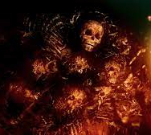
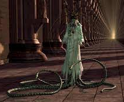
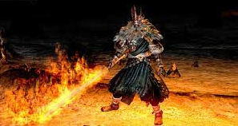
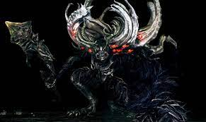

La trama de la trilogía se comparte de cierta manera y este juego es
el principio de los tres Dark Souls, en este juego se cuenta que antes
de todo solo había oscuridad, la era de los dragones, era cuando los
dragones antiguos y los Wyverns gobernaban la tierra, hasta que un día
llegó la primera llama y con ella las grandes almas de las que se
apoderaron 4 seres, La Bruja de Izalith, Nito el Primer Muerto, Gwyn
el rey de los humanos y un último ser que recogió el Alma Oscura, el
Furtivo Pigmeo, con esta alma creó a la humanidad. Tanto la bruja, Nito,
Gwyn y el furtivo pigmeo con sus humanos entablaron guerra contra los
dragones hasta que vencieron y proclamaron la era del Fuego, pero esto
no dura para siempre, en cierto momento la llama empieza a apagarse y
si la llama se apaga empezaría la era de la oscuridad, para evitar que
esto pasara Gwyn se ofreció como el primer Señor de la Ceniza sirviendo
como leña para avivar el fuego de la primera llama.

Para completar la primera parte del juego hay que tocar tres campanas, las
campanas están custodiadas por tres jefes importantes, estos son las
Gárgolas del campanario ubicadas en el burgo de los no muertos, estas son
simplemente dos gárgolas protectoras que te sorprenden con un combate doble.
Quelaag la Bruja del caos ubicada en la ciudad infestada, la cual es hija de
la bruja de Izalith que desencadenó un caos terrible convirtiendo a sus hijas
y a ella misma en el Lecho del Caos y convirtiéndola a ella y a su hermana
Quelana en híbridas mitad araña demoníaca mitad humana, Quelaag y Quelana se
salvaron de convertirse en el Lecho del Caos porque huyeron justo antes de que
se desatara el caos en Izalith, el único objetivo de Quelaag era proteger a su
hermana que era ciega hasta el dia de su muerte. Y el Golem de hierro, este es
una armadura de hierro gigante creada para evitar el paso a todo aquel que
quiera viajar a Anor Londo, la ciudad de los dioses, el Golem funciona solo por
su núcleo, el cual está creado a base de un hueso de dragón antiguo y una gran
alma, este Golem está en la fortaleza de Sen, un castillo lleno de trampas y
hombres serpiente.
De esta forma podrás viajar a Anor Londo, donde podrás enfrentar a Ornstein y
Smough, uno de los jefes más difíciles de toda la trilogía y así desbloquear
las puertas de los jefes principales y empezar la segunda parte del juego para
abrir el camino al jefe final. Antes de ir a por ellos puedes enfrentar a otros
jefes ubicados en esta ciudad, como Gwyndolin la Luna Oscura hijo de Gwyn, para
ello tendrás que destruir la ilusión de su hermana Gwynevere, y buscarlo en un
pasillo que parece infinito, aunque es posible que lo que derrotes y sea solo
una ilusión, por razones relacionadas con el tercer juego.

Una vez derrotado el dueto Ornstein y Smough se desbloquearán los caminos a,
Seath el Descamado ubicado debajo de los archivos del duque en la cueva de
cristal, en el mismo Anor Londo, este jefe es un dragón pero estaba del lado de
los humanos porque los dragones no lo trataban bien por el hecho de no tener
escamas y los traicionó. Nito el rey del Cementerio ubicado cerca de la zona
inicial del juego al final de las catacumbas, en la tumba de los gigantes, Nito
es considerado como el primer muerto y es el encargado de repartir la muerte en
el mundo. El Lecho del Caos es la representación de la llama del Caos, una llama
creada por la bruja de Izalith al intentar recrear la primera llama cuando se
estaba apagando, esta llama se volvió inestable y consumió a los habitantes de
Izalith convirtiendo a algunos de ellos en demonios incluyendo a las propias
hijas de esta bruja, como Quelaag o Quelana, la bruja fue consumida junto a
sus otras hijas y usada como semillero del Lecho del Caos. Los Cuatro Reyes
son líderes ejemplares de la ciudad de Nuevo Londo, por lo que Gwyn decidió
darles una gran alma, a pesar de ello los reyes fueron consumidos por el
abismo, y para no suponer un peligro inundaron la ciudad de Nuevo Londo para
mantenerse atrapados en el abismo, para matarlos hay que derrotar también a Sif
el gran lobo gris, este era el acompañante de Artorias, pero en la misión de
Oolacile relacionada con el abismo se vieron sumidos en la corrupción del
abismo y Artorias usó su escudo para proteger a su compañero del Abismo quedando
él a la merced de este, ante esto Sif aguarda en la tumba de su antiguo amo
guardandola para evitar que nadie sufra el mismo destino que el, al derrotarlo
conseguimos un anillo que nos permite entrar en el abismo donde se encuentran
estos reyes, tras matarlos se abre el camino al jefe final, Gwyn, Señor de la
ceniza, el rey de los humanos, que al volverse Señor de la Ceniza se volvió
hueco pero aún así tiene un solo objetivo, proteger la llama ante todo. Cuando
lo derrotes podrás elegir entre enlazar la primera llama o dejar que se apague
y dar paso a la era de la oscuridad.

Como extra cabe recalcar que hay una zona opcional que no es un DLC llamada el
mundo pintado de Ariamis, es un mundo nevado al que se accede desde un cuadro en
Anor Londo, en este mundo hay un jefe importante llamado Priscilla la Mestiza, la
cual es una mitad dragón.
En el DLC se puede hablar del Caballero Artorias que fue el comandante
de los lobos de Farron, también conocido como el caminante del Abismo
pero acabó sucumbiendo al abismo en su misión de rescatar a la princesa
del Anochecer que estaba en la ciudad de Oolacile sumida en el abismo,
la espada de Artorias ya estaba maldita de anteriores viajes al abismo
ya que con su anillo de pacto y un collar de pacto podía entrar en el
abismo a placer, pero eso no protegió su espada, de todas formas ese no
fue el problema, Artorias sucumbió al abismo cuando en Oolacile yendo con su
compañero Sif los superaron las fuerzas del abismo y Artorias terminó
creando una barrera con su escudo sobre su compañero hasta el punto de
romperse el brazo y acabar cayendo en manos de Manus, sucumbiendo así al
vacío volviéndose loco. El otro jefe es el mismo Manus, el padre del
Abismo, Manus fue humano alguna vez hasta que su humanidad se retorció
volviéndose en el padre del abismo, cuando la gente de Oolacile fue
engañada para cavar la tumba de Manus este enfureció y empezó a expandir
el abismo en busca de un colgante poderoso y haciendo que todo Oolacile
acabe sumiso en el abismo hasta que lo derrota el no muerto elegido y
explota en fragmentos.
